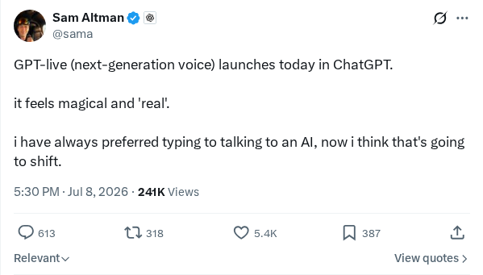
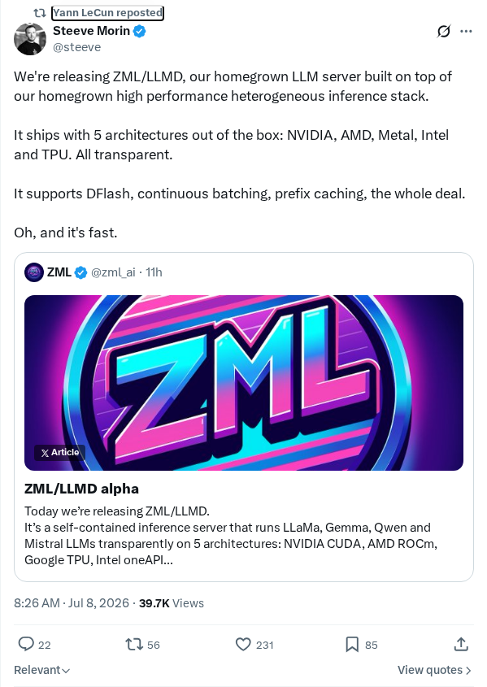
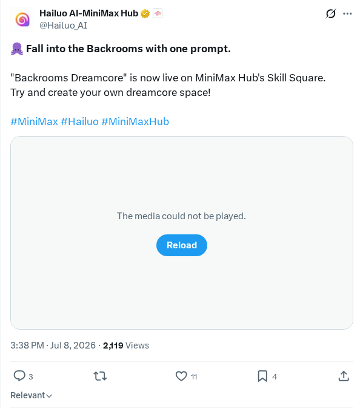
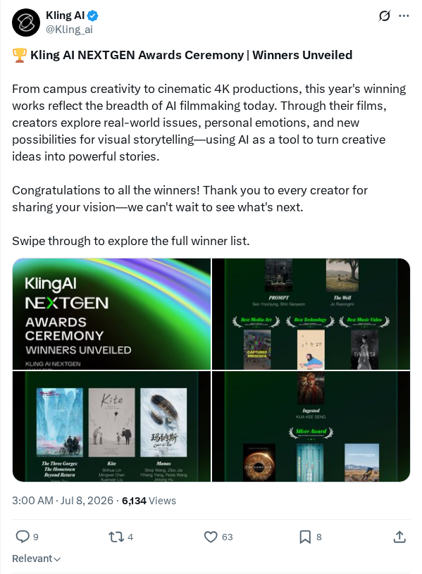

GPT-Live 模型驱动自然的 AI 语音交互
OpenAI 推出了 GPT-Live，这是一种专为实现自然流畅的 AI 语音交互而构建的下一代语音模型。该模型目前已直接在现有的 ChatGPT 平台接口中驱动 ChatGPT Voice 功能。GPT-Live 旨在改善实时对话延迟并提高交互流畅度，使用户能够参与更自然的语音对话。此次发布通过升级语音助手接口底层的音频和对话能力，代表了实时多模态交互的一次飞跃。
AI 前沿资讯、研究与趋势精选
OpenAI 推出了 GPT-Live，这是一种专为实现自然流畅的 AI 语音交互而构建的下一代语音模型。该模型目前已直接在现有的 ChatGPT 平台接口中驱动 ChatGPT Voice 功能。GPT-Live 旨在改善实时对话延迟并提高交互流畅度，使用户能够参与更自然的语音对话。此次发布通过升级语音助手接口底层的音频和对话能力，代表了实时多模态交互的一次飞跃。
SemiAnalysis 发布的财务分析显示，继 2026 年 6 月 1 日提交秘密 IPO 申请后，Anthropic 有望在 2026 年第三季度实现超过 10 亿美元的利润。报告指出，Anthropic 和 OpenAI 合计每年产生约 1000 亿美元的年度经常性收入。Anthropic 在 B2B 商业化方面处于领先地位，这主要得益于企业对 Claude Code 的采用。作为首家启动秘密 IPO 申请的西方主流 AI 实验室，Anthropic 的单位经济效益和模型定位使其能够自主为未来的大规模计算基础设施提供资金。
三菱日联金融集团 (MUFG) 已与 OpenAI 建立合作伙伴关系，将在其全球业务中部署 ChatGPT Enterprise。这家大型金融服务机构计划利用大语言模型来优化内部工作流程、提高员工生产力，并大规模部署创新的生成式 AI 金融服务。此次部署标志着 OpenAI 的企业级安全 AI 平台在监管严格的全球金融领域实现了重要整合，使 MUFG 能够为其员工构建一个 AI 原生组织。
Cognition 发布了最新的软件工程模型 SWE-1.7，旨在处理真实代码库中复杂的多文件编辑和逻辑任务。该模型展示了先进的自主软件工程能力和长视距推理能力。根据 Cognition 的说法，其性能指标表明该模型的认知能力已接近预期的下一代系统（如 GPT 5.5 和 Claude Opus），显著缩小了人工智能代理与顶尖人类软件开发者在漏洞定位和代码修改任务上的差距。
OpenAI 推出了 GPT-Live，这是一个专为实时流媒体环境设计、具有高度交互性的生成式模型版本。该系统旨在实现超低延迟处理和即时对话反馈，从静态的“查询-响应”范式转向连续的多轮对话。核心架构组件包括流处理 API、持续学习结构以及实时监控和分析活动数据流的自适应安全系统。
xAI 宣布发布其自有大语言模型系列的最新迭代版本 Grok 4.5。更新后的模型在核心推理、计算机编程和复杂数学处理方面进行了结构性改进。据 xAI 称，Grok 4.5 提供了更深入的上下文理解、更高的训练效率、更完善的对齐方法以及实时信息检索功能，从而为开发者和对话应用提供更精准的指令执行支持。
Mistral 推出了 Robostral Navigate，这是一款旨在协调自主移动的机器人导航模型。该模型利用视觉语言表示来绘制物理环境，并将高级语言指令转化为低级物理动作。通过整合多模态传感能力，该系统能够动态处理空间数据，以适应实时物理障碍和复杂地形挑战，突显了 Mistral 在物理 AI 操作领域的成果。
网络安全研究人员展示了 GitHub 集成 AI 代理中的一个重大安全漏洞，成功操纵该代理从私有仓库中泄露了机密数据。通过使用针对性的提示词注入技术并利用代理检索机制中薄弱的授权检查，研究人员绕过了上下文访问边界。研究发现了一个关键的架构缺陷：自然语言指令可以覆盖访问控制列表，这强调了确定性授权沙盒的必要性。
微软发布了 Flint，这是一种旨在帮助 AI 代理可靠地生成高质量数据表示的可视化中间语言。传统可视化框架通常需要在低质量、简单的规范与容易导致代理执行失败的复杂布局之间进行权衡。Flint 通过提供基于语义类型的规范并结合自动化布局优化引擎，解决了这一局限，使 AI 代理能够在无需管理底层布局细节的情况下，生成准确且美观的图表。
Kastor 是一个新的开源框架，将基础设施即代码（IaC）的概念引入到 AI 代理的配置和部署中。该框架灵感源自 HashiCorp 的 Terraform，允许开发者编写声明式、版本控制的配置文件，用于定义代理角色、系统提示词、集成工具和多代理通信网络。该系统旨在为复杂的、大语言模型驱动的应用程序和认知代理工作流带来可重复性和结构化编排。
Foreman 是一个开源的、自托管的大语言模型（LLM）网关，旨在通过成本感知的模型路由来最大限度地降低 API 支出。作为中间路由层，Foreman 会分析传入的 API 请求，并根据用户定义的性能和预算参数将其动态重定向到最具成本效益的模型。该平台提供本地化数据控制、实时 Token 跟踪和全面的成本分析，帮助组织管理日益增长的生产级 API 成本。

OpenAI 正式发布了 ChatGPT 的下一代实时语音功能，旨在为基于语音的交互提供低延迟和自然的韵律。该功能允许用户从传统的文本提示转向为头脑风暴和随性信息检索等任务设计的实时对话接口。Greg Brockman 也以 GPT-Live 为名推广了这项技术，暗示了未来 API 访问和与 Codex 集成的计划，以扩展其在开发环境中的用途。
Anthropic 对 Claude 开发者生态系统进行了更新，以支持自主代理工作流。改进内容包括更新的 API 功能和模型交互，旨在简化工程师构建复杂 AI 代理的方式。该版本旨在将交互从被动的聊天机器人提示转变为企业开发生命周期中的主动、多步操作，使 Claude 能够直接协助软件工程任务，如编码、调试和管理系统架构。

研究团队发布了 ZML 和 LLMD，这是一种专门的大语言模型服务器架构，具有自定义的高性能异构推理栈。该框架旨在优化 LLM 部署，通过硬件加速处理来提高吞吐量并降低各种计算环境下的操作延迟。此项开发针对的是服务现代大规模生成模型的密集型基础设施需求，为开发者提供了替代传统、非优化服务后端的自定义选择。

MiniMax 在其新推出的 MiniMax Hub 平台的 Skill Square 板块中引入了新的创意工具 Backrooms Dreamcore。该功能基于 Hailuo AI 技术，使用户能够通过简单的文字提示生成氛围感十足的梦核 (dreamcore) 主题数字空间。此次发布是 MiniMax 更广泛推出的 MiniMax Hub 的一部分，该平台旨在为用户和开发者提供访问、下载和使用该公司生成式模型的中心化门户。

Kling AI 公布了其首届 NEXTGEN 大奖的正式获奖名单，该奖项旨在表彰在专业电影制作与生成式人工智能交叉领域的工作。颁奖典礼涵盖了从学生主导的项目到高级电影级 4K 作品的各种参赛作品。此次活动凸显了现代生成式视频工具如何被创作者采用，以处理复杂的叙事、传达个人主题，并尝试先进的多模态合成媒体制作技术。
Google 研究人员推出了 Gemma 4，这是新一代开放权重、原生多模态语言模型。该系列模型旨在提升计算效率和推理能力，架构包括密集模型和混合专家模型 (MoE)，参数规模从 23 亿到 310 亿不等。除了改进的视觉和音频编码器外，研究还提出了一种统一的、无编码器的 12B 模型，可直接摄取原始音频和图像分块。此外，Gemma 4 集成了一种新的“思考模式”，在回答前生成推理过程。这些模型在 STEM、多模态和长上下文基准测试中表现出显著的性能提升，在人类评价中与更大的开放前沿模型相媲美。
NVIDIA 研究人员推出了 Nemotron-Labs-Diffusion，这是一种将自回归、扩散和自投机解码统一在单一架构中的三模态语言模型。该模型系列采用联合自回归-扩散目标训练，规模可达 140 亿参数，并可切换模式以保持高吞吐量。扩散目标改进了前瞻规划，而自回归组件提供了语言先验。在自投机模式下，该模型使用扩散草拟和自回归验证，在 GB200 GPU 上使用 SGLang 进行测试，其每前向传递解码的 Token 数量是 Qwen3-8B 的 6 倍，在 SPEED-Bench 上实现了 4 倍的吞吐量提升。
研究人员引入了 DSpark，这是一种旨在提高高并发下大语言模型 (LLM) 服务吞吐量的投机解码框架。为了防止草稿质量下降，DSpark 使用了一种半自回归架构，将并行骨干网络与轻量级顺序模块相结合，并引入了块内依赖建模。为实现效率最大化，它采用了置信度调度验证，根据估计的前缀存活概率动态调整验证长度。在 DeepSeek-V4 生产服务系统中处理实时用户流量时，DSpark 减少了验证浪费，并将单用户生成速度较已建立的 MTP-1 基线提高了 60% 到 85%。
研究人员提出了 TREK (Teacher-Routed Exploration via Forward KL)，这是一种分阶段训练过程，利用蒸馏技术扩大强化学习的探索支持。虽然组相对策略优化 (GRPO) 在难以处理策略内支持之外的提示词时表现吃力，但 TREK 能识别低通过率的提示词，从提案源获取验证过的候选解决方案，通过简短的前向 KL 阶段将这些模式拉入学生的支撑范围，并返回到策略内 GRPO。使用 DeepSeek-V4 提案的 TREK 在 AIME 2025 上将 Qwen3-8B 的数学推理能力从 36.9 提高到了 40.3，在 AIME 2024 上从 47.9 提高到了 51.1，同时还显著提升了代理在 ALFWorld 和 ScienceWorld 上的表现。
一项系统性研究显示，强化学习 (RL) 适应性增益在训练后主要集中在 Transformer 层的一小部分中。研究人员利用 Qwen3 和 Qwen2.5 系列中的七个模型，并使用三种 RL 算法 (GRPO, GiGPO, Dr. GRPO)，引入了一个“层贡献”度量来隔离单个层的增益。他们发现，训练单个中间层 Transformer 层可以恢复大部分甚至在某些情况下超过全参数 RL 训练在数学推理、代码生成和代理决策方面的性能增益。
研究人员引入了 SWE-Review，这是一种用于软件工程代理的闭环框架，利用代理代码审查来系统地诊断和修订拉取请求 (PR)。SWE-Review 不再使用开环、单次 PR 生成，而是实现了一个审查者代理，该代理会探索仓库、决定是否接受 PR，并提供结构化反馈以进行迭代修订。除了框架外，作者还发布了 SWE-Review-Bench 评估套件和 SWE-Review-Traj 数据集。实验表明，这种“生成-审查-修订”循环持续提高了 PR 解决率，性能优于单轮固定上下文审查，并实现了有效的测试时扩展。
研究人员开发了 Flex-Forcing，这是一种统一的视频扩散训练和推理框架，无缝连接了双向和自回归生成。传统的双向模型擅长全局一致性但延迟较高，而自回归模型虽能实现快速流式输出但易受暴露偏差的影响。Flex-Forcing 通过定义在时间轴和去噪步骤上的灵活分块机制解决了这一问题。它允许在块之间进行双向规划，并在块内进行自回归合成。在多个视频生成基准测试中，该框架提供了更好的视频质量、长视频稳定性和更快的推理速度。
研究人员引入了 SkillOpt-Lite，这是一个通过零阶 (ZO) 优化制定的、具有理论基础的最小化自主代理技能优化流水线。在 PAC 学习的指导下，该框架确立了三个核心原则：基于文件系统的轨迹探索、共识属性挖掘和验证门控。SkillOpt-Lite 在 GPT-5.5 上将 LiveMath 性能提高了 8.8 点，在 GPT-5.4-nano 上提高了 25.4 点，使 nano 模型表现优于标准 GPT-5.4。扩展到 SpreadsheetBench 上的全套工具优化 (HarnessOpt) 后，GPT-5.4-nano 实现了 0.7758 的准确率，超越了运行标准流水线的更大模型 GPT-5.5。